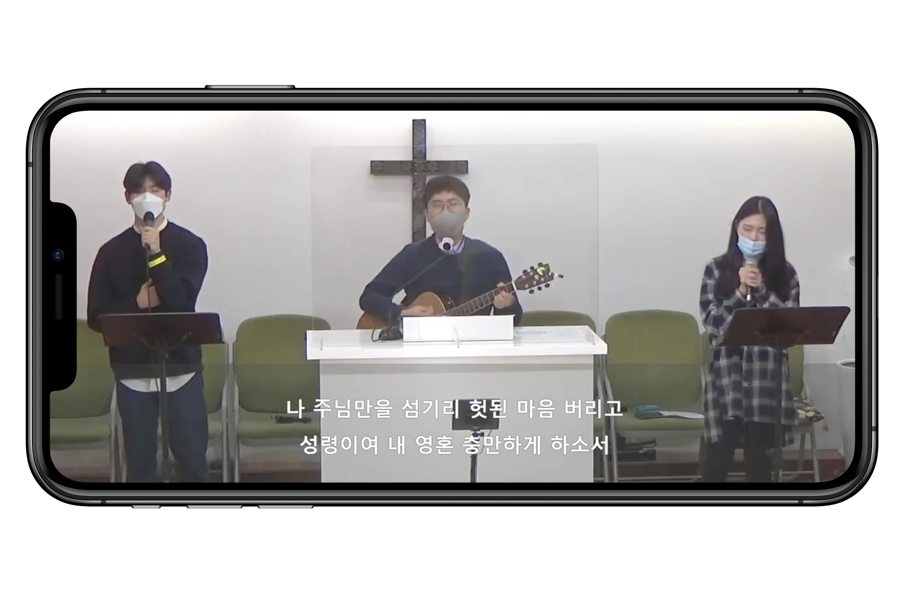
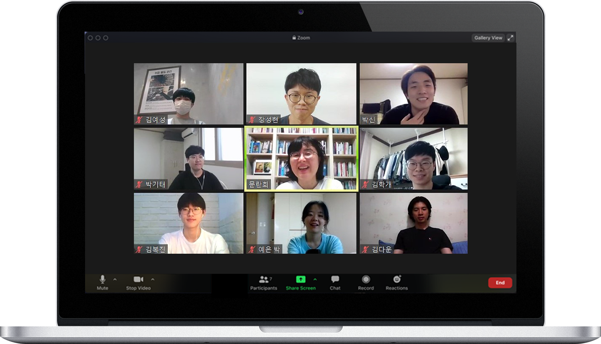
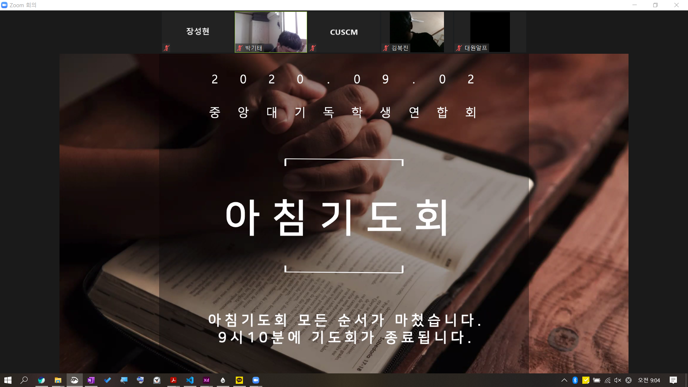

그 사랑을 모두가 보도록
"너희들은 가라 저 캠퍼스로!"
CUSCM

전 중앙인이 드리는
온라인 목요예배
매주 목요일 6시 중앙대생들은 뜨거운 예배와 찬양을 드리고 있습니다. 예배는 재학생들이 진행하며, 말씀은 동문 목사님들께서 매주 돌아가며 전해주십니다. 동아리에 속하지 않더라도, 예배를 드리기 원하시는 분 누구나 함께하실 수 있습니다.
*2020년부터는 동아리 비대면 수칙을 따라 각자의 자리에서 유튜브와 ZOOM을 이용해 참여해주시기 바랍니다.

말씀으로 돌아가자
Bible College
우리는 하나님의 말씀에 영혼을 구원하는 능력이 있음을 믿습니다. Bible
College (BC)는 하나님에 대해 더 알아가고 대화를 나누는
시간입니다. 학년에 따라 다양한 반이 있으며, 중앙대
동문 목사님과 강사님께서 강의를 진행해주십니다.
매주 화요일 6시, zoom으로 진행됩니다.

어떤 일도 기도보다 앞서지 않게
아침 기도회
매일 아침 말씀과 기도로 하루를 시작할 수 있는 시간
입니다. 묵상(10분)-설교(20분)-개인기도(자유)의 순서로
진행되고, 설교는 생명의 삶(두란노) 본문으로 진행되고 있습니다.
기도할 때 성령께서 능력으로 여러분과 함께하실 것입니다.
월요일~금요일 오전 8시, zoom으로 진행됩니다.
최신 소식을 놓치지 마세요!
CUSCM의 자세한 근황은 다음을 통해 보실 수 있습니다 :)